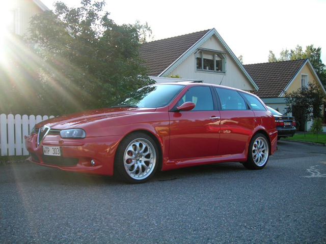
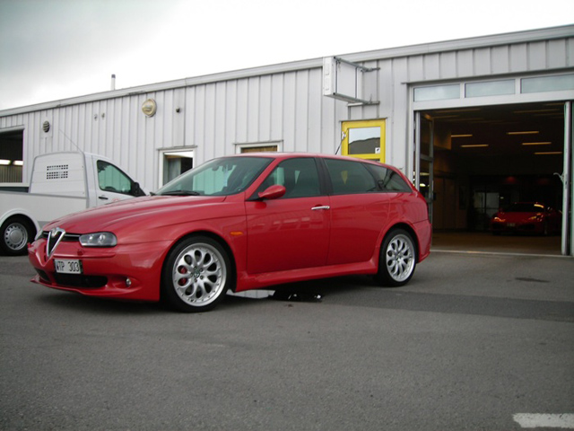
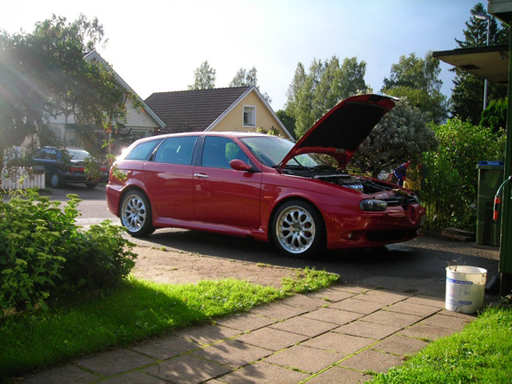
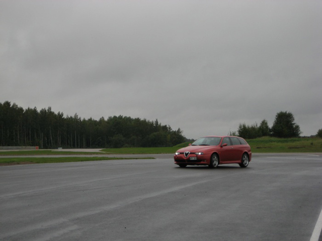
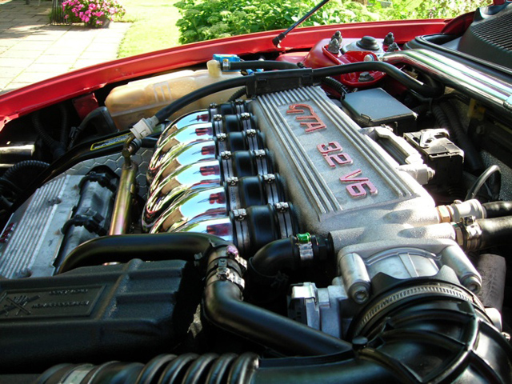
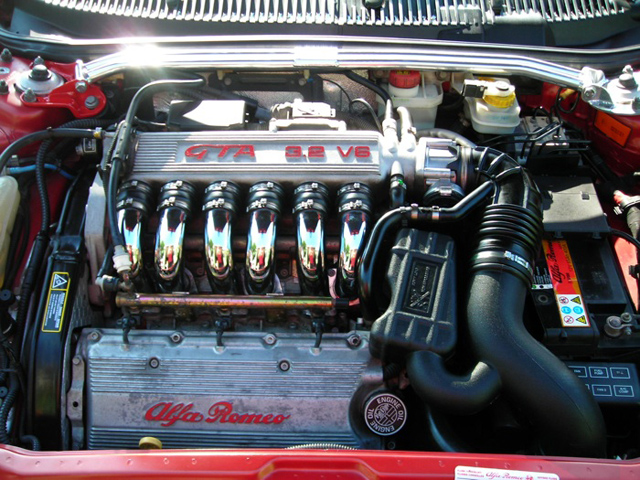
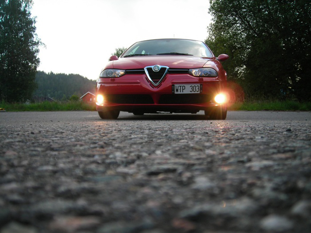

Johan Granath - Sweden
156 GTA SW -03
Paint: ROSSO MIRO
Rims: Zender Zienna 8x18"
Tyers: Toyo Proxes T1R 225/40/18






Submitted: 2008 - Nov


![[Index]](bw_index.gif)
![[Next]](bw_next.gif)